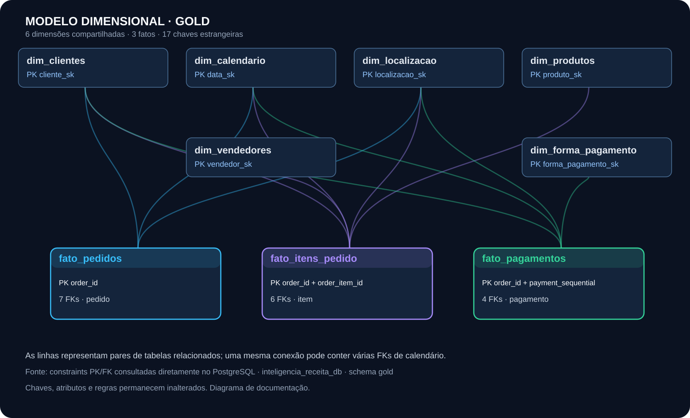
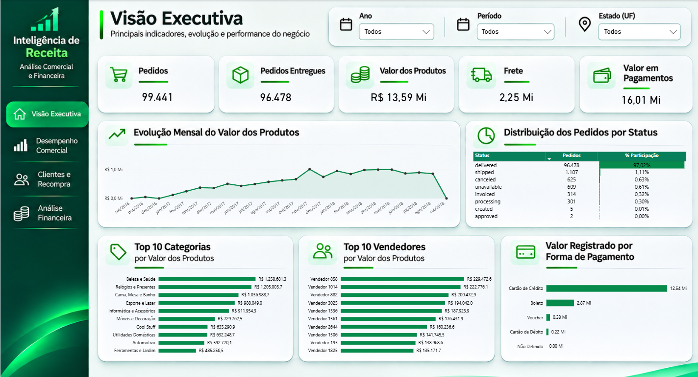
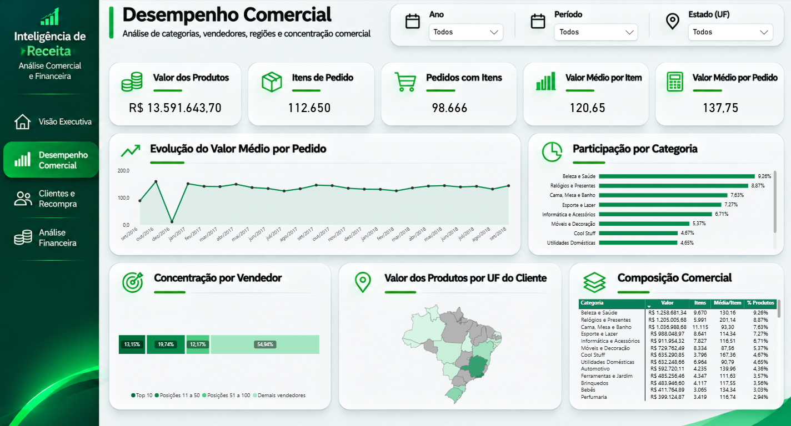
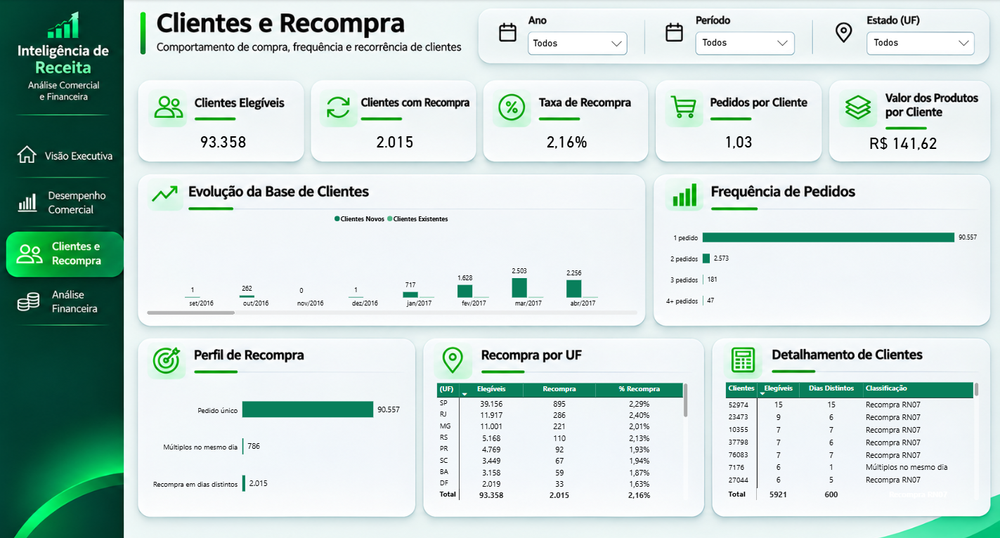
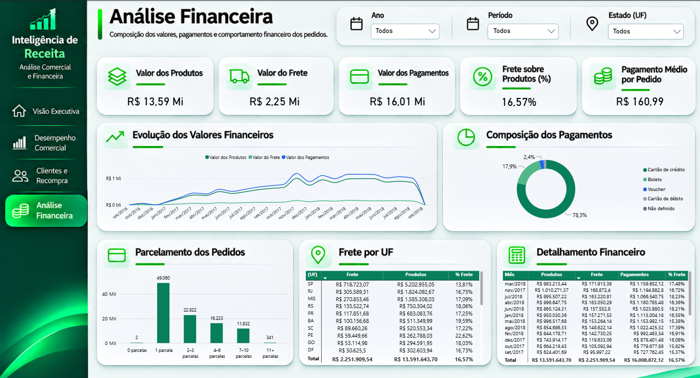

Objetivo do projeto
Construir uma base analítica consistente para investigar o comportamento das vendas, a composição dos pedidos, o perfil dos clientes, a recompra e os pagamentos registrados no conjunto de dados da Olist.
Projeto de engenharia e análise de dados desenvolvido com Python, PostgreSQL, SQL e Power BI, utilizando dados públicos do Brazilian E-Commerce Public Dataset by Olist.
A solução organiza dados transacionais em uma arquitetura Bronze, Silver e Gold, aplica modelagem dimensional em esquema estrela e disponibiliza análises de pedidos, produtos, clientes, recompra, frete e pagamentos registrados.
Estruturação dos dados desde a origem até a camada analítica, com regras de negócio documentadas, testes de qualidade e indicadores desenvolvidos para apoiar análises comerciais e financeiras.
Construir uma base analítica consistente para investigar o comportamento das vendas, a composição dos pedidos, o perfil dos clientes, a recompra e os pagamentos registrados no conjunto de dados da Olist.
Utilização de dados públicos de e-commerce da Olist, contendo informações de pedidos, itens, clientes, produtos, vendedores, pagamentos e entregas. Os registros representam um conjunto histórico de operações disponibilizado para análise.
Desenvolvimento de um fluxo de processamento em Python e PostgreSQL, organizado em camadas Bronze, Silver e Gold. O processo contempla ingestão, padronização, tratamento, validações e disponibilização de estruturas adequadas ao consumo analítico.
Estruturação da camada Gold segundo princípios de modelagem dimensional, com fatos em diferentes granularidades — pedido, item e pagamento —, dimensões relacionadas e integridade referencial. O modelo foi preparado para análises no Power BI.
Aplicação de verificações de integridade, consistência de valores, duplicidades e reconciliação entre camadas. O projeto documenta as regras de negócio e utiliza testes automatizados e consultas SQL para validar as estruturas analíticas.
Desenvolvimento de quatro páginas no Power BI: Visão Executiva, Desempenho Comercial, Clientes e Recompra e Análise Financeira. Os painéis reúnem indicadores, comparações, distribuições e análises temporais.
O fluxo foi organizado para separar os dados de origem, o tratamento, a modelagem analítica e a visualização.
Os números abaixo descrevem o conjunto de dados processado e as verificações executadas na solução.
As quantidades representam registros do conjunto de dados utilizado, não resultados operacionais de uma empresa em produção. As verificações aprovadas correspondem aos escopos testados e não eliminam todas as possíveis limitações da base.
A camada Gold reúne três tabelas fato com diferentes granularidades e seis dimensões compartilhadas. Em conjunto, elas formam uma constelação de fatos baseada nos princípios de modelagem dimensional de Kimball.

Chave primária: order_id. Sete chaves estrangeiras: cliente, localização e cinco papéis da dimensão calendário — compra, aprovação, transportadora, entrega e previsão de entrega.
Chave primária composta: order_id + order_item_id. Seis chaves estrangeiras: cliente, localização, produto, vendedor, data de compra e limite de envio. Medidas: price e freight_value.
Chave primária composta: order_id + payment_sequential. Quatro chaves estrangeiras: cliente, localização, forma de pagamento e data de compra. Medida: payment_value.
Os 17 relacionamentos correspondem a restrições físicas de chave estrangeira da camada Gold. O diagrama documenta o PostgreSQL, não os relacionamentos internos do Power BI. As diferentes granularidades exigem agregações adequadas para evitar duplicações de valores financeiros.
As análises distinguem o nível de pedido, item de pedido e pagamento. Essa separação evita multiplicações indevidas de valores em relacionamentos entre tabelas transacionais.
A modelagem diferencia os identificadores transacionais dos clientes de sua identidade consolidada, permitindo análises de comportamento e recorrência de compras.
A classificação de recompra considera clientes com pelo menos dois pedidos entregues em dias civis distintos, conforme a regra documentada no projeto.
Os valores de produtos, frete e pagamentos registrados são tratados como conceitos diferentes. Os pagamentos da base não são apresentados automaticamente como receita contábil reconhecida, lucro ou margem.
O repositório reúne os componentes técnicos e a documentação do projeto, incluindo arquitetura, modelagem, regras de negócio e validações.
Quatro páginas desenvolvidas para analisar o desempenho comercial e financeiro, os clientes e a composição das operações registradas na base da Olist.




Clique em qualquer imagem para visualizar o dashboard em tamanho maior. As imagens representam páginas do relatório desenvolvido no Power BI.
← Ver outros projetos